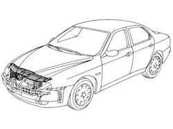
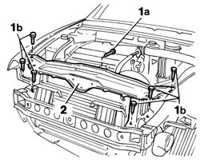
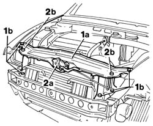
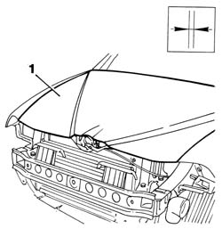

7210A15 R.R. HEADLAMP HOUSING/FRONT WING CROSSMEMBER
- Path
- Procedures > 72 PANELS AND FRAME > 7210 REMOVING REFITTING > 7210A structural elements (front part) > 7210A15 R.R. HEADLAMP HOUSING/FRONT WING CROSSMEMBER
- Kind
- repair procedure (removal / refitting; the operation number is the code)
- Applies to
- all engines; all production periods
- Interactive page
- https://sloeber94.github.io/elrnDB-a156/en/#/3239023
Applies to: all engines; all production periods
 Removing
Removing
 Refitting
RefittingCheck if any of the connected parts are deformed by checking body alignment dimensions. Use appropriate measurement tools (reference rigs, templates or gauges).
If necessary, straighten the body before removing the part.

Applies to: all engines; all production periods
1. Undo the bolts shown in the figure.
2. Remove the side bracket from the car.

Applies to: all engines; all production periods
Refitting
Removing1. Provisionally fit the side bracket to the car.
2. Position front wing (2a) and front bumper (2b), lower bonnet lid (2c).
Check alignment and ensure the surrounding gap is even.
Remove the components fitted previously.

Applies to: all engines; all production periods
Paint the front bracket (use the specified cycle).
1. Apply wax.
